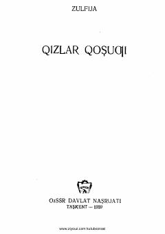

QQZulfiyaning 1939-yilda nashr etilgan dastlabki she'riy to'plami.
Ushbu kitob taniqli oʻzbek shoirasi Zulfiyaning dastlabki ijod namunalaridan biri boʻlib, xotin-qizlarning ozodligi, baxtli turmushi va mehnatsevarligini kuylovchi she'rlarni oʻz ichiga oladi. Asar 1939-yilda nashr etilgan boʻlib, davr ruhini aks ettiruvchi lirik va ijtimoiy she'rlardan iborat.